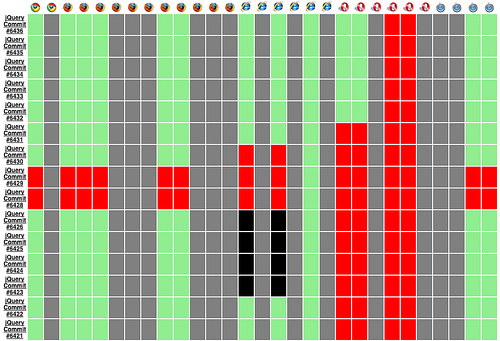

Very easy.
test( "some tests", function() {
expect( 3 );
ok( true, "passes because true is true" );
equal( "1", 1, "passes because '1' == 1" );
strictEqual( "1", 1, "fails because '1' !== 1" );
});
3823 tests, and counting.
Separate your code into small,
individually testable parts.
Just qunit.js, qunit.css, and a little bit of HTML.
<!DOCTYPE html>
<html>
<head>
<title>MyApp Test Suite</title>
<link rel="stylesheet" href="qunit.css" type="text/css">
<script src="qunit.js"></script>
<script src="myapp.js"></script>
<script src="myapp-test.js"></script>
</head>
<body>
<h1 id="qunit-header">MyApp Test Suite</h1>
<h2 id="qunit-banner"></h2>
<div id="qunit-testrunner-toolbar"></div>
<h2 id="qunit-userAgent"></h2>
<ol id="qunit-tests"></ol>
<div id="qunit-fixture"></div>
</body>
</html>
It's really this simple.
test( "The name of the test", function() {
// Assertions.
});
You say “this is how it should work,” and
QUnit tells you if it does (or doesn't).
This is most useful when testing async code, but get in the habit anyways.
// You can either set an expectation (number) like this.
test( "test name", function() {
expect( 3 );
// QUnit expects 3 assertions in this test.
});
// Or like this.
test( "test name", 3, function() {
// QUnit expects 3 assertions in this test.
});
ok,
equal,
notEqual,
strictEqual,
notStrictEqual,
deepEqual,
notDeepEqual,
raises
okA boolean assertion that passes if the first argument is truthy.
test( "ok", 3, function() {
ok( true, "passes because true is true" );
ok( 1, "passes because 1 is truthy" );
ok( "", "fails because empty string is not truthy" );
});
equalA comparison assertion that passes if actual == expected.
test( "equal", 3, function() {
var actual = 1;
equal( actual, 1, "passes because 1 == 1" );
equal( actual, true, "passes because 1 == true" );
equal( actual, false, "fails because 1 != false" );
});
notEqualA comparison assertion that passes if actual != expected.
test( "notEqual", 3, function() {
var actual = 1;
notEqual( actual, 0, "passes because 1 != 0" );
notEqual( actual, false, "passes because 1 != false" );
notEqual( actual, true, "fails because 1 == true" );
});
strictEqualA comparison assertion that passes if actual === expected.
test( "strictEqual", 3, function() {
var actual = 1;
strictEqual( actual, 1, "passes because 1 === 1" );
strictEqual( actual, true, "fails because 1 !== true" );
strictEqual( actual, false, "fails because 1 !== false" );
});
notStrictEqualA comparison assertion that passes if actual !== expected.
test( "notStrictEqual", 3, function() {
var actual = 1;
notStrictEqual( actual, 1, "fails because 1 === 1" );
notStrictEqual( actual, true, "passes because 1 !== true" );
notStrictEqual( actual, false, "passes because 1 !== false" );
});
deepEqualRecursive comparison assertion, working on primitives, arrays and objects, using ===.
test( "deepEqual", 7, function() {
var actual = { a: 1 };
equal( actual, { a: 1 }, "fails because objects are different" );
deepEqual( actual, { a: 1 }, "passes because objects are equivalent" );
deepEqual( actual, { a: "1" }, "fails because '1' !== 1" );
var a = $('body > *'),
b = $('body').children();
equal( a, b, "fails because jQuery objects are different" );
deepEqual( a, b, "fails because jQuery objects are not equivalent" );
equal( a.get(), b.get(), "fails because element arrays are different" );
deepEqual( a.get(), b.get(), "passes because element arrays are equivalent" );
});
notDeepEqualRecursive comparison assertion. The result of deepEqual, inverted.
test( "notDeepEqual", 3, function() {
var actual = { a: 1 };
notEqual( actual, { a: 1 }, "passes because objects are different" );
notDeepEqual( actual, { a: 1 }, "fails because objects are equivalent" );
notDeepEqual( actual, { a: "1" }, "passes because '1' !== 1" );
});
raisesAssertion to test if a callback throws an exception when run.
test( "raises", 3, function() {
raises( function() {
throw new Error( "Look ma, I'm an error!" );
}, "passes because an error is thrown inside the callback" );
raises( function(){
x // ReferenceError: x is not defined
}, "passes because an error is thrown inside the callback" );
raises( function(){
var a = 1;
}, "fails because no error is thrown inside the callback" );
});
And execution order cannot be guaranteed!
// Don't do this.
var counter = 0;
test( "first test", 1, function(){
counter++;
equal( counter, 1, "counter should be 1" );
});
test( "second test", 1, function(){
counter++;
equal( counter, 2, "counter should be 2" );
});
test( "third test", 2, function(){
counter++;
equal( counter, 2, "counter should be 2" );
ok( false, "oops, an error" );
});
Any markup in here will be reset after every test (uses jQuery if possible).
<!DOCTYPE html>
<html>
<head>
<title>MyApp Test Suite</title>
<link rel="stylesheet" href="qunit.css" type="text/css">
<script src="qunit.js"></script>
<script src="myapp.js"></script>
<script src="myapp-test.js"></script>
</head>
<body>
<h1 id="qunit-header">MyApp Test Suite</h1>
<h2 id="qunit-banner"></h2>
<div id="qunit-testrunner-toolbar"></div>
<h2 id="qunit-userAgent"></h2>
<ol id="qunit-tests"></ol>
<div id="qunit-fixture">
<ul>
<li>foo</li>
<li>bar</li>
<li>baz</li>
</ul>
</div>
</body>
</html>
Sometimes it really is this simple.
test( "enumerate()", 4, function() {
var items = $("#qunit-fixture li");
strictEqual( items.enumerate(), items, ".enumerate should return this" );
equal( items.eq(0).text(), "0. foo", "first item should have index 0" );
equal( items.eq(1).text(), "1. bar", "second item should have index 1" );
equal( items.eq(2).text(), "2. baz", "third item should have index 2" );
});
test( "enumerate( 1 )", 4, function() {
var items = $("#qunit-fixture li");
strictEqual( items.enumerate( 1 ), items, ".enumerate should return this" );
equal( items.eq(0).text(), "1. foo", "first item should have index 1" );
equal( items.eq(1).text(), "2. bar", "second item should have index 2" );
equal( items.eq(2).text(), "3. baz", "third item should have index 3" );
});
If possible, test your plugin in
multiple versions of jQuery.
Because your unit tests should be organized too.
module( "core" );
test( "a test in the core module", function() {
ok( true, "this test had better pass" );
});
test( "another test in the core module", function() {
ok( true, "this test had also better pass" );
});
module( "options" );
test( "a test in the options module", function() {
ok( true, "this test really, really better pass" );
});
test( "another test in the options module", function() {
ok( false, "sadly, this test is going to fail" );
});
Configure setup and teardown callbacks to streamline your tests.
// Defining a "setup" callback.
module( "module1", {
setup: function() {
ok( true, "once extra assert per test" );
}
});
test( "test with setup", function() {
expect( 1 );
});
// Defining both "setup" and "teardown" callbacks.
module( "module2", {
setup: function() {
ok( true, "once extra assert per test" );
this.prop = "foo";
},
teardown: function() {
ok( true, "and one extra assert after each test" );
}
});
test( "test with setup and teardown", function() {
expect( 3 );
same( this.prop, "foo", "this.prop === 'foo' in all tests" );
});
// Since callbacks aren't defined, expectations aren't incremented.
module( "module3" );
test( "test with neither setup nor teardown", function() {
expect( 1 );
strictEqual( this.prop, undefined, "this is a per-module object" )
});
But as you can see, sometimes no errors is a bad thing.
test( "no errors", function() {
var actual = false;
setTimeout( function(){
ok( actual, "this test would fail.. if it ever ran" );
}, 1000 );
});
Now you get an error.. but it's not the error you want.
test( "expectations", function() {
expect( 1 );
var actual = false;
setTimeout( function(){
ok( actual, "this test would fail.. if it ever ran" );
}, 1000 );
});
stop & startYou must tell QUnit to wait for an asynchronous action to complete.
test( "stop & start", function() {
expect( 1 );
var actual = false;
stop();
setTimeout( function(){
ok( actual, "this test actually runs, and fails" );
start();
}, 1000 );
});
asyncTestAnother way to tell QUnit to wait for an asynchronous action to complete.
asyncTest( "asyncTest & start", function() {
expect( 1 );
var actual = false;
setTimeout( function(){
ok( actual, "this test actually runs, and fails" );
start();
}, 1000 );
});
Get more granular control over your asynchronous tests.
test( "stop w/ timeout", function() {
expect( 1 );
stop( 1000 );
$.getJSON( "http://oops.com?callback=?", function( data ) {
ok( actual, "this test would fail.. if it ever ran" );
start();
});
});
(In one test)
Because this test is done after two seconds, regardless.
asyncTest( "multiple async w/ setTimeout", function() {
expect( 4 );
var url = "http://jsfiddle.net/echo/jsonp/?callback=?";
$.getJSON( url, { a: 1 }, function( data ) {
ok( data, "data is returned from the server" );
equal( data.a, "1", "the value of data.a should be 1" );
});
$.getJSON( url, { b: 2 }, function( data ) {
ok( data, "data is returned from the server" );
equal( data.b, "2", "the value of data.b should be 2" );
});
setTimeout( start, 2000 );
});
This test is done when it's done.
test( "multiple async w/ counter", function() {
expect( 4 );
stop();
// Only call start() when counter is 0.
var counter = 2;
function done() { --counter || start(); }
var url = "http://jsfiddle.net/echo/jsonp/?callback=?";
$.getJSON( url, { a: 1 }, function( data ) {
ok( data, "data is returned from the server" );
equal( data.a, "1", "the value of data.a should be 1" );
done();
});
$.getJSON( url, { b: 2 }, function( data ) {
ok( data, "data is returned from the server" );
equal( data.b, "2", "the value of data.b should be 2" );
done();
});
});
Jörn added this one in... because I asked nicely.
test( "multiple async w/ multiple stops", function() {
expect( 4 );
var url = "http://jsfiddle.net/echo/jsonp/?callback=?";
stop();
$.getJSON( url, { a: 1 }, function( data ) {
ok( data, "data is returned from the server" );
equal( data.a, "1", "the value of data.a should be 1" );
start();
});
stop();
$.getJSON( url, { b: 2 }, function( data ) {
ok( data, "data is returned from the server" );
equal( data.b, "2", "the value of data.b should be 2" );
start();
});
});
What are you testing anyways, your
client code or your server code?
Mock Your Ajax Requests with Mockjax for Rapid Development
// Simulate your API.
$.mockjax({
url: '/user',
contentType: 'text/json',
responseText: {
status: -1
}
});
$.mockjax({
url: '/user/*',
contentType: 'text/json',
responseText: {
status: 1,
user: 'sample user'
}
});
// Unit tests.
test( "user tests", function() {
expect( 4 );
stop();
$.getJSON( "/user", function( data ) {
ok( data, "data is returned from the server" );
equal( data.status, "-1", "no user specified, status should be -1" );
start();
});
stop();
$.getJSON( "/user/123", function( data ) {
ok( data, "data is returned from the server" );
equal( data.status, "1", "user found, status should be 1" );
start();
});
});
Add ?test to the URL to run only that module/test. Combine terms with &.
| “Modules” Test Suite | |
|---|---|
| All tests | modules.html |
| “core” module | modules.html?core |
| “options” module | modules.html?options |
| “Assertions” Test Suite | |
| All tests | assertions.html |
| “ok” test | assertions.html?ok |
| “ok” & “equal” tests | assertions.html?ok&equal |
Just add ?noglobals to the URL, and QUnit will fail any “leaky” tests.
test( "not leaky", 1, function() {
var x = true;
ok( x, "passes because x is true" );
});
test( "leaky", 1, function() {
x = true;
ok( x, "also passes because x is true" );
});
Automatically capture QUnit test results, à la TestSwarm.
// Runs once at the very beginning.
QUnit.begin = function() {
console.log( "Running Test Suite" );
};
// Runs once at the very end.
QUnit.done = function( failures, total ) {
console.info( "Suite: %d failures / %d tests", failures, total );
};
// Runs once after each assertion.
QUnit.log = function( result, message ) {
console[ result ? "log" : "error" ]( message );
};
// Runs before each test.
QUnit.testStart = function( name ) {
console.group( "Test: " + name );
};
// Runs after each test.
QUnit.testDone = function( name, failures, total ) {
console.info( "Test: %d failures / %d tests", failures, total );
console.groupEnd();
};
// Runs before each module.
QUnit.moduleStart = function( name ) {
console.group( "Module: " + name );
};
// Runs after each module.
QUnit.moduleDone = function( name, failures, total ) {
console.info( "Module: %d failures / %d tests", failures, total );
console.groupEnd();
};
// Runs after each test group. Redefining this function will
// override the built-in #qunit-fixture reset logic.
QUnit.reset = function() {
console.log( "Test done!" );
};
Distributed Continuous Integration for JavaScript.
